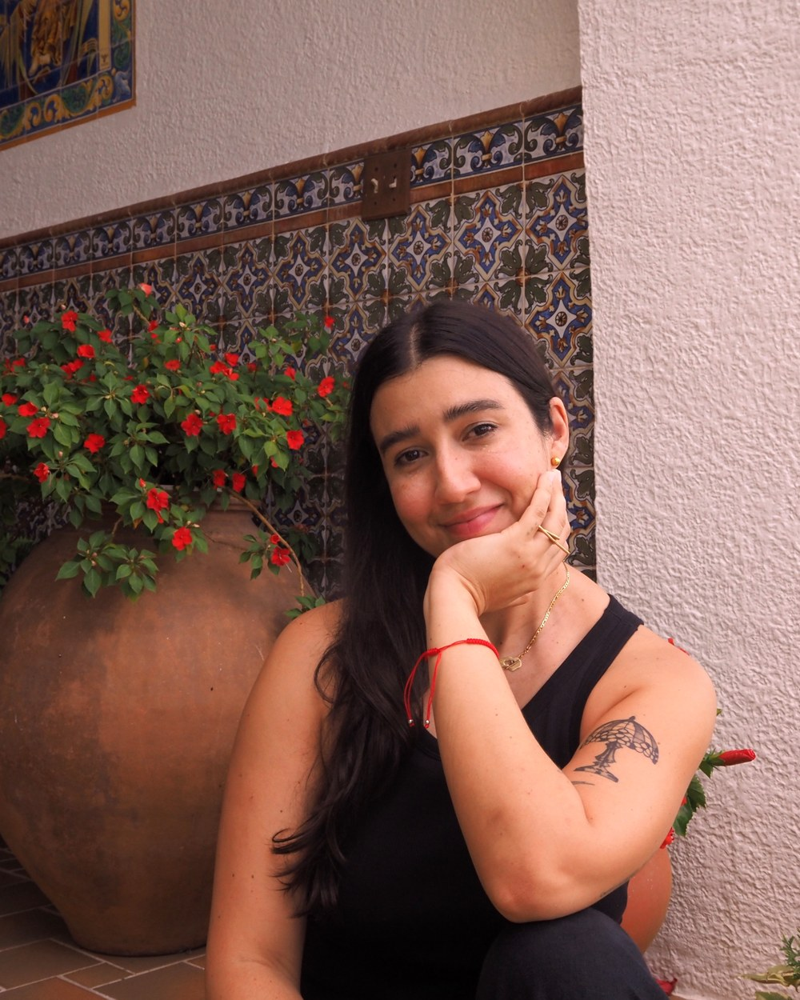

Hecho a mano en Puerto Rico
Piezas de cerámica hecha a mano en Puerto Rico, moldeadas con paciencia y arcilla local.

Sobre mí
Arcilla, paciencia y raíz local
¡Hola! Me llamo Karina y con mis manos soy la que creo todo lo que ven aquí.
Comencé en cerámica en el 2020, bajo la tutela de Ivonne Prats. Desde entonces me he dedicado a explorar mi inspiración más grande: mi país, Puerto Rico. Hay tanta belleza en todos lados que es fácil encontrar formas, texturas y colores para crear.
Me apasiona investigar todo lo que conecta con mi herencia: el proceso ancestral de los taínos y de las culturas mexicanas, la cerámica contemporánea, y cómo la influencia europea ha marcado nuestra cultura criolla —en especial, la cerámica y sus usos. En 2026 nació en mí un interés particular por explorar el barro nativo, y en un futuro cercano tengo como objetivo incorporarlo en mis piezas.
No me gusta seguir tendencias ni especializarme en un solo objeto; mi filosofía es crear piezas atemporales, bellas y duraderas, que puedan funcionar en espacios tanto hoy como en el futuro.
¡Gracias por estar aquí!
Piezas
Nuestras colecciones
Explora por categoría. Cada pieza es única, hecha a mano una a la vez.
Cómo comprar
Hagamos un pedido
Escríbeme por el formulario, o directamente por redes sociales, WhatsApp o correo. Te respondo lo antes posible con disponibilidad y precios.
- Instagram @TU_USUARIO
- WhatsApp +1 (787) 000-0000
- Correo hola@ceramicaobjetos.com
- Ubicación Bayamón, Puerto Rico